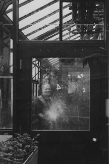
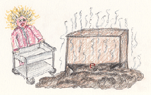

| Mr. Mac I was a normal teenage college student when I began to work for Mr. Mac at the university greenhouse. Mac was a real Irishman, with high bulgy chestnut cheeks, and piercing bright blue eyes that squeezed to a squint when he was about to say something profound or indulge in a bit of shenanigans. |
||||||||||||
| Then, I was sent to the windowless plant rooms in another building to do a bit of cabinet cleaning. I was almost finished, when I tried to remove a bottle from the top cabinet. It was a Mrs. Butterworth’s pancake syrup bottle with the glass formed in the shape of Mrs. Butterworth. As I used all my strength to pull the bottle out, it exploded in my hand. The cork flew off the bottle, spraying the most vile substance I have ever smelled all over the room. The smell permeated all the rooms. When I opened the hall door for fresh air, who should appear to check up on his geniuses’ progress but Mr. Mac. In my horror, his laughter was contagious. A forgotten bottle of fish emulsion fertilizer had fermented. I was the lucky one that discovered it. After more cleaning to get rid of that smelly mess, I went back to the greenhouse for the last half hour and could hardly wait to go home. One last job, water greenhouse number 4. Mr. Mac had a strange squint in his eye. My track record for genius status wasn’t good today. How would he take his revenge? Turn on the automatic sprinklers? I carefully watered the thirsty plants. When I came around to the glass wall separating room number 3 and 4, Mac was watering opposite me in number 3. Splat. Water hit the glass wall in front of my face. Ah ha! This was fun having a water fight where I couldn’t get wet. We battled hoses gushing, spraying back and forth down the row of plants. I felt a blast of cold water. Mac had the last laugh. He knew about the missing piece of glass. I was finished. A humbled genius, I was ready to go home. |
||||||||||||
| Mac called his student workers budding geniuses. I too was enrolled in his genius program. I never heard that term used in conjunction with my name, so the status felt awkward. One Tuesday, I made it to work on time only to remember my task for the morning was in the sink. Another two million clay flower pots to scrub clean. It made washing dishes at home look easy. I slowly walked to the sink and began the ordeal. I scraped and rubbed years of slug slime, crusted soil, and slippery, moldy, green patches of oozing primitive plants and animals from the pots, trying to avoid smelling the stench of decay. Halfway thru my ordeal, Mac arrived after driving his wife to her job. It was a moment of pure pleasure for us student geniuses to carefully check over his facial features and torture him with giggles and laughter. Bright red imprints made by his wife’s last minute good-bye kiss appeared randomly from day to day. Wow, there it was, smack across the temple. We had a hard time imagining how some of those kisses were planted. Either they were a pretty wild couple or their eyesight over 50 was so bad they really missed the mark. While I finished up the last two hundred pots, another student began making what Mac called traditional Irish Corn Beef and Cabbage. Wheelbarrows full of soil were put in a large square box on legs. The soil was then steamed for several hours to kill any unwanted life forms. Mac kept raving how the smell reminded him of his Grandmother’s delicious cooking. The stench of all those steamed dead life forms was gagging me. I had to escape. I quickly loaded my clean pots on a cart, pushed the cart up the ramp into the greenhouses and took a big breath of fresh air. The architects that designed and built the greenhouse obviously had never grown a plant. The main work area was built like a bomb shelter of cast concrete with no windows. The ramp I had just struggled pushing up a load of heavy pots made life difficult if not dangerous at times. In the greenhouses the concrete floors collected water and grew slime, making them slick like ice. I delivered my pots to house number 1, stacking them under the bench. Pushing the cart before me I felt my feet launched into outer space. I had forgotten about that patch of slime. I tried to save myself by flinging my arm on the plant bench as I felt myself fall toward the hard concrete floor. It worked. I pulled myself into an upright position. Then the pain hit. I had slammed my arm across pots of cactus. My arm was imbedded with thousands of small spines. Down below there was no sympathy from Mac, only a roll of wide tape to pull out the cactus spines. Geniuses had to be tough. Meanwhile, a fierce thunderstorm was brewing outside. As I put away my last cart load of pots, the heavy rain turned to hail. I ran out of the greenhouse toward the safety of the bomb shelter. I was not about to be part of a test to discover the breaking point of glass from pounding hailstones. I saw visions of flying glass shards shredding and slicing like a high speed blender. I passed Mac in the hall and he told me to keep working. “What was I, scared of a little hail?” You bet. A scared genius too. As I frantically pushed the cart down the ramp it started to wildly swerve back and forth. Entering the bomb shelter it grazed the side of the cooking Corn Beef and Cabbage. Kabang!! The bottom fell out. Piles of oozing soggy soil spread across the floor. The smell was unbelievably foul. I had managed to hit a small release lever on the bottom. What incredible luck for a genius. |
||||||||||||
|  | ||||||||||||
| Postscript April 2019 At the time, I could not have know the future impact of working at the greenhouse. I learned basic skills growing a variety of plants. I saw soil cooked to death in the soil sterilizer. That dead soil was then prepared for planting by adding synthetic fertilizers, DDT and other pesticides. Little plants were squirted with bright pink fungicides, and the four greenhouse rooms sprayed regularly with pesticides. When there was a bad outbreak of bugs, a pesticide bomb was released at night when the greenhouses were empty. One full-time employee who did the spraying, had a problem decompressing the sprayer and it sprayed him with pesticide in the chest and face. He was sick for weeks, and several years later developed cancer. Silent Spring by Rachel Carson was published. I questioned the use of DDT prophylactically in the soil, and my boss said he had used it for years and he was just fine. I had seen conventional agriculture in action. I was exposed to many toxic chemicals. It was time to make a major change. |
||||||||||||
|  | ||||||||||||